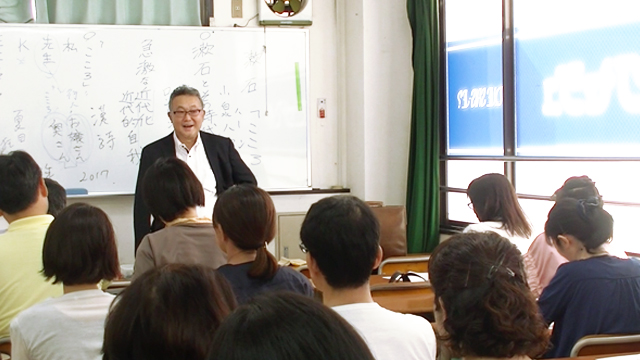

先日某塾の依頼で行った「漱石“こころ”を語る」と題した講義。おかげさまで盛況のうちに終了することができました。
これは保護者や一般の方対象に、夏目漱石の長編小説「こころ」を中心に漱石の残した遺産について語るものでした。
前半は漱石の個人的背景の話。
私が強調したのは漱石は「教師」であったということ。つまり彼は同時代の自然主義派の作家たちと違って、職業的小説家を目指したのではないということでした。
彼は何よりも教師であった。
最初は松山の中学校次に熊本の高等学校（第五高等学校教授）、ロンドン留学を経て帰国後は、一高と東大で講師…と漱石のキャリアはまず教師としてスタートしたということです。
漱石がいかに教師として優れていたかを示すエピソードがあります。彼は英語教師としてかなり厳しい授業をやるので有名でしたが、東大で英文学を教えるころから彼を慕う学生（弟子）たちが、毎週木曜に漱石宅へ集まり議論したり教えを請うたりしたのです。木曜会といいます。
弟子たちの中には小宮豊隆、寺田寅彦、芥川龍之介ら後に日本を代表するそうそうたる文化人が名を連ねています。
このように優れた人材を育てるのが上手という意味で漱石は優れた教師であったということです。
「吾輩は猫である」はリハビリのために書いた！？
ところで漱石を語るとき忘れてはならないのはロンドン留学です。
漱石が熊本第五高等学校で教えているとき、文部省から「英語英文学研究のため」2年間のロンドン留学を命じられます。1900年漱石33歳のときです。
当時、日本の大学はまだ歴史が浅く教師は基本的に欧米人でした。彼らは「お雇い外国人」と呼ばれ高い給与を受け取っていました。
漱石がロンドン留学を命じられた明治後期は優秀な若者を欧米先進国に留学させ、進んだ科学技術や学問、法律や政治経済、軍事のシステムを吸収させ、帰国するや否や大学の教師や各界のリーダーに育て上げようとしていた時期なのです。
ちょうど優秀な日本人と外国人を入れ替える時だったのです。
要するに漱石はこの時代の飛び切りのエリートの一人だったということです。
漱石も国の期待に応えるべく、ロンドンで猛勉強に励みます。給付金を浮かせるため乏しい食糧の中、下宿にこもり大量に本を買い込み「成果を上げるため」に研究を続けますが、ついに強度のノイローゼにかかります。
（今で行く強度のうつ病です）
当時のロンドンは、すでに地下鉄が走り空は工場のばい煙でどんより曇り、貧富の差は拡大しながらも繁栄と退廃の雰囲気ただよう世紀末的様相を表していました。
強度のノイローゼで敏感になった漱石の神経にとって、産業革命以降「７つの海を支配する」イギリスの爛熟期はどう見えていたでしょう。
恐らく近代文明の光と影の両面を洞察したのではないでしょうか。
とにかく漱石は「大のイギリス嫌い」になって帰国します。
帰国後漱石は一高と東大で授業をしながら、夫婦仲の悪さも手伝って益々ノイローゼ（ウツ）は悪化します。
そのころ彼は友人高浜虚子のすすめで「吾輩は猫である」を書くのですね。
これは病気（神経症）の自己治療（江藤淳評）のため書いたといいます。いわば「吾輩は猫である」はリハビリのために創作した作品ということです。
これが好評を博し文名が上がるわけです。
そして1907年（明治40年）朝日新聞の申し出により一切の教職をやめ専属の小説記者となります。
小説家夏目漱石の誕生です。この時既に40歳。ずいぶん遅い作家スタートですね。ここで重要なのは、漱石がロンドンに行った→病気になった→リハビリのため小説を書いた。つまりロンドン行きが小説家漱石を誕生させたということです。
こころは恋愛小説ではない
さて、いよいよ小説「こころ」についてですが、まず私が強調したのは「こころ」は恋愛を扱っているようで決して「恋愛小説」ではないということです。
第一こんな色気（！？）のない恋愛小説はありません（笑）
語られているのは「先生」「K」「お嬢さん」をめぐる三角関係をモチーフにしながら、先生とKの心理的葛藤であり、エゴイズムの問題ということです。
「お嬢さん」をめぐっての争いは、あくまでこのエゴイズムによって滅びる（自滅する）人間の問題、すなわちこの時代における急速な近代化が引き起こす「合理主義」や「競争原理に基づく冷酷な人間関係」がそれまで存在していた「人間らしさ」を放逐していく悲劇を描いているということ。先生が嫉妬と猜疑心に駆られ、Kを追いつめる場面、そしてついにKが自殺した後先生が「俺は策略で勝っても人間としては負けた」と語るところがそのことを象徴しています。
このように「こころ」といえば、主人公の「先生」のエゴイズムに焦点が当たりがちですが、「K」も劣らずエゴイストといえます。
Kはいわば「道」のためにお嬢さんへの愛を断念した。つまり愛より思想をとった。
これはKの言動からすると、自分の高い倫理観の方が「高級」であり、女性への愛は一段低いものと見なすことを意味します。
要するに「先生」も「K」も「お嬢さん」を放ったらかしにしてどちらが気高い精神の持ち主であるか競い合っているわけです。
ここに「愛」はありません。この小説は愛を描いたものというより「愛の不在」をこそ描いたものといえるでしょう。
講義では、これらのエゴイズムの問題を急速に進む日本の近代化の「影」と対応させて説明していくのですが、長くなるのでここでは触れません。
最後に
漱石の人生は短く（49歳で死去）、作家人生はもっと短い。それでも残した作品は数多い。
彼の作品は「こころ」も含めて必ずしもバランスの良いものではないと思っています。
しかし文体は知的で男性的。論理的で格調高いのにユーモア（諧ぎゃく）の精神もある。
この辺は漱石の専門であった18世紀イギリス文学（デフォーやスターン）の影響もあるでしょう。
漱石の作品は暗いものも多く、漱石自身孤独感を抱えていたけれど、不思議と読むものを暖かくする特徴があります。
それは漱石が小説の完成度や美的構成を追求することよりも、自分の内面と誠実に向き合い「時代の精神」と勇敢に対峙したからではないかと思います。
そのことが作品に普遍性を与え、今も私たちの共感を得ているのでしょう。
私は漱石を読むたびに「いかに生きるべきか」を常に考えさせられます。そしてそれらの作品の中に多くのヒントを見つけ、励まされて生きてきたように思います。
あらゆる古典は皆そうですが、漱石の作品も時代が変わっても常に多くの人に生きるヒントを与え続けていくのでしょう。
漱石はやはり「国民の教師」（武者小路実篤の言葉）なのかも知れません。
※当日は皆さんとても熱心に聞いて下さり、参加者から活発に質問も出て1時間半の予定が30分以上延び2時間を超える講義となりました。それでも最後まで全員が席を立たず「漱石への関心の高さ」がうかがえました。
私もとても楽しくお話させてもらいました。アンケートでも「もう一度漱石を読み直したい」という声が多く、有意義な時間に感謝しております。ありがとうございました。